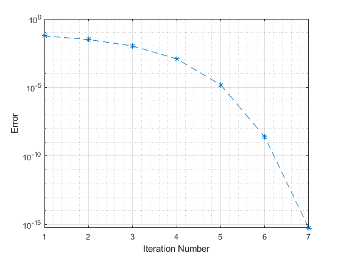

clc; clear; close all;
f = @(x) x.^4 - 1.4*x.^3 + 0.67*x.^2 - 0.126*x + 0.0072;
df = @(x) 4*x.^3 - 1.4*3*x.^2 + 0.67*2*x - 0.126;
x_plot_series = linspace(-0.1,0.7,1000);
f_plot_series = f(x_plot_series);
figure;
plot(x_plot_series, f_plot_series);
xlabel("x"); ylabel("f(x)");
title("Root Visualization");
grid on; grid minor;
rel_tol = 1e-10;
guess1= 0.0;
guess2= 0.2;
guess3= 0.5;
guess4= 0.7;
root1 = myNewtonRoot(f,df,guess1,rel_tol)
n x_n f(x) df/dx(x) x_{n+1} h = |x_{n+1} - x_n| r = |x_{n+1}/x_n|
_ ________ __________ _________ ________ ___________________ _________________
1 0 0.0072 -0.126 0.057143 0.057143 Inf
2 0.057143 0.0019372 -0.062397 0.088189 0.031046 1.5433
3 0.088189 0.00039923 -0.037748 0.098766 0.010576 1.1199
4 0.098766 3.7506e-05 -0.03077 0.099985 0.0012189 1.0123
5 0.099985 4.6429e-07 -0.03001 0.1 1.5471e-05 1.0002
6 0.1 7.421e-11 -0.03 0.1 2.4737e-09 1
7 0.1 3.4694e-18 -0.03 0.1 1.1102e-16 1
root1 =
0.1000
root2 = myNewtonRoot(f,df,guess2,rel_tol)
n x_n f(x) df/dx(x) x_{n+1} h = |x_{n+1} - x_n| r = |x_{n+1}/x_n|
_ _______ ___________ _________ _______ ___________________ _________________
1 0.2 -0.0008 0.006 0.33333 0.13333 1.6667
2 0.33333 0.00013827 0.0021481 0.26897 0.064368 0.8069
3 0.26897 -0.00022746 0.008406 0.29602 0.027059 1.1006
4 0.29602 -2.463e-05 0.0063878 0.29988 0.0038558 1.013
5 0.29988 -7.1865e-07 0.006012 0.3 0.00011954 1.0004
6 0.3 -7.1377e-10 0.006 0.3 1.1896e-07 1
7 0.3 -7.1991e-16 0.006 0.3 1.1996e-13 1
root2 =
0.3000
root3 = myNewtonRoot(f,df,guess3,rel_tol)
n x_n f(x) df/dx(x) x_{n+1} h = |x_{n+1} - x_n| r = |x_{n+1}/x_n|
_ _______ ___________ __________ _______ ___________________ _________________
1 0.5 -0.0008 -0.006 0.36667 0.13333 0.73333
2 0.36667 0.00013827 -0.0021481 0.43103 0.064368 1.1755
3 0.43103 -0.00022746 -0.008406 0.40398 0.027059 0.93722
4 0.40398 -2.463e-05 -0.0063878 0.40012 0.0038558 0.99046
5 0.40012 -7.1865e-07 -0.006012 0.4 0.00011954 0.9997
6 0.4 -7.1377e-10 -0.006 0.4 1.1896e-07 1
7 0.4 -7.1297e-16 -0.006 0.4 1.1885e-13 1
root3 =
0.4000
root4 = myNewtonRoot(f,df,guess4,rel_tol)
n x_n f(x) df/dx(x) x_{n+1} h = |x_{n+1} - x_n| r = |x_{n+1}/x_n|
_ _______ __________ ________ _______ ___________________ _________________
1 0.7 0.0072 0.126 0.64286 0.057143 0.91837
2 0.64286 0.0019372 0.062397 0.61181 0.031046 0.95171
3 0.61181 0.00039923 0.037748 0.60123 0.010576 0.98271
4 0.60123 3.7506e-05 0.03077 0.60002 0.0012189 0.99797
5 0.60002 4.6429e-07 0.03001 0.6 1.5471e-05 0.99997
6 0.6 7.421e-11 0.03 0.6 2.4737e-09 1
7 0.6 1.5613e-17 0.03 0.6 5.5511e-16 1
root4 =
0.6000

guess1_0 = 0.0;
guess1_1 = 0.01;
guess2_0 = 0.2;
guess2_1 = 0.21;
guess3_0 = 0.5;
guess3_1 = 0.49;
guess4_0 = 0.7;
guess4_1 = 0.69;
root1_sec = mySecantRoot(f,guess1_0, guess1_1, rel_tol)
n x_n x{n-1} f(x) df/dx(x) x_{n+1} h = |x_{n+1} - x_n| r = |x_{n+1}/x_n|
_ ________ ________ __________ _________ ________ ___________________ _________________
1 0 0.01 0.0060056 -0.11944 0.060282 0.050282 6.0282
2 0.01 0.060282 0.0017457 -0.08472 0.080888 0.020606 1.3418
3 0.060282 0.080888 0.00069372 -0.051054 0.094476 0.013588 1.168
4 0.080888 0.094476 0.00017536 -0.038148 0.099072 0.0045967 1.0487
5 0.094476 0.099072 2.8094e-05 -0.032037 0.099949 0.00087693 1.0089
6 0.099072 0.099949 1.5194e-06 -0.030304 0.1 5.0138e-05 1.0005
7 0.099949 0.1 1.4455e-08 -0.030016 0.1 4.8157e-07 1
8 0.1 0.1 7.5579e-12 -0.03 0.1 2.5193e-10 1
9 0.1 0.1 3.8164e-17 -0.03 0.1 1.2768e-15 1
root1_sec =
0.1000
root2_sec = mySecantRoot(f,guess2_0, guess2_1, rel_tol)
n x_n x{n-1} f(x) df/dx(x) x_{n+1} h = |x_{n+1} - x_n| r = |x_{n+1}/x_n|
_ _______ _______ ___________ _________ _______ ___________________ _________________
1 0.2 0.21 -0.00073359 0.006641 0.32046 0.11046 1.526
2 0.21 0.32046 0.00010031 0.007549 0.30718 0.013287 0.95854
3 0.32046 0.30718 4.0413e-05 0.0045076 0.29821 0.0089656 0.97081
4 0.30718 0.29821 -1.0893e-05 0.0057225 0.30011 0.0019035 1.0064
5 0.29821 0.30011 6.8637e-07 0.0060831 0.3 0.00011283 0.99962
6 0.30011 0.3 1.0034e-08 0.0059942 0.3 1.674e-06 0.99999
7 0.3 0.3 -9.5885e-12 0.0059999 0.3 1.5981e-09 1
8 0.3 0.3 1.3357e-16 0.006 0.3 2.226e-14 1
root2_sec =
0.3000
root3_sec = mySecantRoot(f,guess3_0, guess3_1, rel_tol)
n x_n x{n-1} f(x) df/dx(x) x_{n+1} h = |x_{n+1} - x_n| r = |x_{n+1}/x_n|
_ _______ _______ ___________ __________ _______ ___________________ _________________
1 0.5 0.49 -0.00073359 -0.006641 0.37954 0.11046 0.77456
2 0.49 0.37954 0.00010031 -0.007549 0.39282 0.013287 1.035
3 0.37954 0.39282 4.0413e-05 -0.0045076 0.40179 0.0089656 1.0228
4 0.39282 0.40179 -1.0893e-05 -0.0057225 0.39989 0.0019035 0.99526
5 0.40179 0.39989 6.8637e-07 -0.0060831 0.4 0.00011283 1.0003
6 0.39989 0.4 1.0034e-08 -0.0059942 0.4 1.674e-06 1
7 0.4 0.4 -9.5886e-12 -0.0059999 0.4 1.5981e-09 1
8 0.4 0.4 1.4745e-16 -0.006 0.4 2.4591e-14 1
root3_sec =
0.4000
root4_sec = mySecantRoot(f,guess1_0, guess4_1, rel_tol)
n x_n x{n-1} f(x) df/dx(x) x_{n+1} h = |x_{n+1} - x_n| r = |x_{n+1}/x_n|
__ _______ _______ ___________ _________ _______ ___________________ _________________
1 0 0.69 0.0060056 -0.001731 4.1594 3.4694 6.0282
2 0.69 4.1594 209.65 60.426 0.6899 3.4695 0.16586
3 4.1594 0.6899 0.0059944 60.424 0.6898 9.9205e-05 0.99986
4 0.6899 0.6898 0.0059832 0.11283 0.63677 0.053029 0.92312
5 0.6898 0.63677 0.0015739 0.083149 0.61784 0.018929 0.97027
6 0.63677 0.61784 0.00063979 0.049349 0.60488 0.012965 0.97902
7 0.61784 0.60488 0.00015386 0.037481 0.60077 0.0041051 0.99321
8 0.60488 0.60077 2.34e-05 0.031781 0.60004 0.00073631 0.99877
9 0.60077 0.60004 1.1255e-06 0.030252 0.6 3.7203e-05 0.99994
10 0.60004 0.6 8.9443e-09 0.030012 0.6 2.9803e-07 1
11 0.6 0.6 3.4651e-12 0.03 0.6 1.155e-10 1
12 0.6 0.6 -2.6021e-17 0.03 0.6 8.8818e-16 1
root4_sec =
0.6000
syms x;
f = x^4 - 1.4*x^3 + 0.67*x^2 - 0.126*x + 0.0072;
MATLAB_symbolic_solver = solve(f, x)
MATLAB_symbolic_solver =
1/10
3/10
2/5
3/5